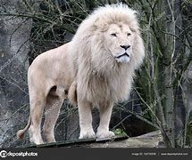

leon blanco

Listas ordenadas
- El Leon blanco
- Los leones blancos son más grandes y pesan hasta 160 kg,
- mientras que la hiena alcanza hasta 80 kg
- Los leones blancos tienen 48″ de altura y las hienas 35″
- Los leones blancos alcanzan los 60 km/h
Rey de la selva
- El Leon
- Caracteristicas
- ¿Donde Viven?
- ¿Que comen?
- Tiempo de vida
No ordenadas
Leones
- León de Atlas.
- León de Katanga.
- León de Africa Occidental.
- León del congo.
VELOCIDAD
- ESPECIE
- GENERO
- Especies de leones
Tipos de leones
- León blanco
- hiena
- León de Africa Occidental
- León del congo.
Anidadas
LEONES BLANCOS
- LEONES
- Genéticamente, el león blanco es la misma subespecie que el león africano del sur (Panthera leo melanochaita), que se encuentra en algunas reservas de vida silvestre en Sudáfrica y en parques zoológicos de todo el mundo, razón por la cual también es común referirse a ellos como león blanco africano. Los leones blancos no son albinos, sino leucistas. Tienen pigmento visible en los ojos (que puede ser de color avellana o dorado, gris azulado o gris verdoso), almohadillas y labios.
- Los leones blancos de ojos azules existen y pueden ser criados selectivamente. El rasgo leucístico se debe a una mutación recesiva en el gen de la tirosinasa (TYR), una enzima responsable de la producción de melanina.
- Se han encontrado mutaciones más graves en el mismo gen que causan albinismo en muchas especies, mientras que otra mutación menos grave en el mismo gen es responsable del rasgo colorante de Chinchilla que se observa en varios mamíferos.
- La descripción del león blanco es igual a la de cualquier otro león, pero con pelaje blanco. Son de la especie felina, por lo que corren en cuatro patas, tienen orejas cortas, puntiagudas y caras pequeñas y lindas. Se ven como grandes felinos particularmente elegantes.
- LEON BLANCO
- Los leones blancos vivos en la actualidad no necesitan cambios físicos únicos para sobrevivir en su entorno. Es por eso que donde viven los leones blancos son entornos protegidos y bien cuidados de zoológicos e instalaciones para animales.